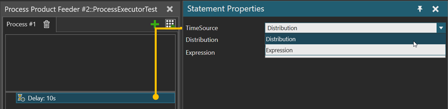

A Delay statement allows you to delay the process execution by a given amount of time.

| Name | Description |
| TimeSource | You can either use Distribution property or Expression property as a time source. |
| Distribution | Pseudo-random real number generated by an expression that defines a distribution. normal([stream], u, s) exponential([stream],
lambda) gamma([stream], k, theta) lognormal([stream], u,
s) triangular([stream],
min, mode, max) uniform([stream], a,
b) weibull([stream], k,
lambda) |
| Expression | Calculated value of a given expression in seconds. |